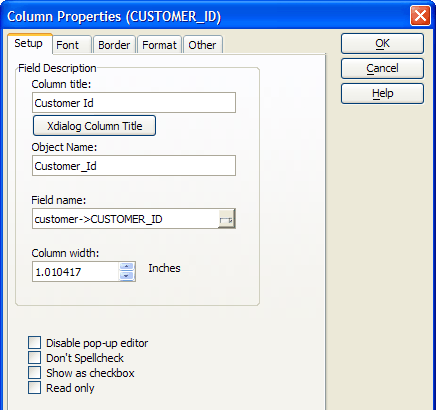
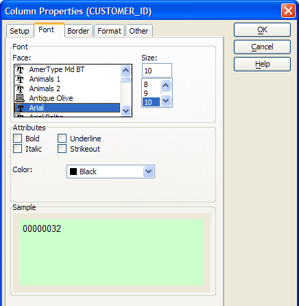
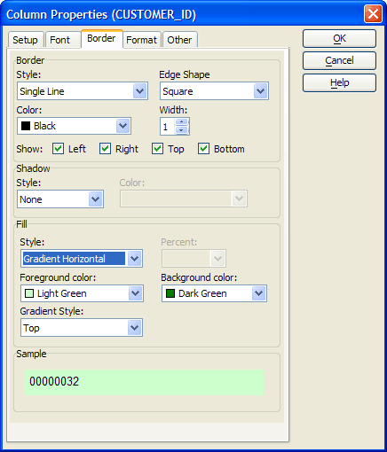
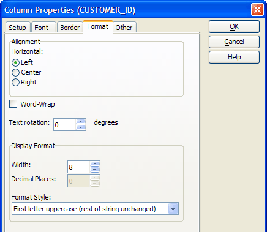
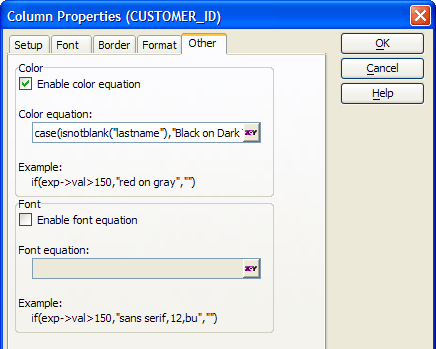

Column Properties
You can set properties that affect the appearance and behavior of individual columns in a browse. These properties include the color, font, and format of the data. Additionally you can set color and font equations, which change the appearance of data depending on conditions you set.
To open the Column Properties window:
Highlight a column by clicking the column title and press the Properties
 button on the toolbar, or select Column
> Properties.
button on the toolbar, or select Column
> Properties.The Column Properties window appears.
|
Item |
Description |
|
Column Title |
The title of the column. :browsename.fieldname.object.column_title as C |
|
Field Name |
The field whose data is displayed. :browsename.fieldname.entry.name as C |
|
Column Width |
The width of the column in your selected unit of measure. :browsename.fieldname.object.width as N |
|
Disable Pop-up Editor |
Whether to disable the pop-up editor. :browsename.fieldname.object.disable_popup_editor as L |
|
Don't Spellcheck |
Whether to disable spellchecking. :browsename.fieldname.object.disable_spellcheck as L |
|
Show as Check box |
Whether to display a check box (for logical fields only). :browsename.fieldname.field.style as C |
|
Read Only |
Whether the column is read only. :browsename.fieldname.field.readonly as L |

|
Item |
Description |
|
Font |
Determines the font of the column titles. :browsename.fieldname.Font.Name as C |
|
Size |
Determines the point size of the column titles. :browsename.fieldname.Font.Size as N |
|
Bold, Underline, Italic, Strikeout |
Sets the character styles of the column titles. :browsename.fieldname.Font.Italic as L :browsename.fieldname.Font.Bold as L :browsename.fieldname.Font.Strikeout as L :browsename.fieldname.Font.Underline as L |
|
Color |
Sets the color of the title font (using a color name or RGB value ). :browsename.fieldname.Font.Color as C |

|
Item |
Description |
|
Border Style |
Sets the border line style (using a color name or RGB value ). :browsename.fieldname.border.style as C |
|
Border Color |
Sets the border line color (using a color name or RGB value ). :browsename.fieldname.border.color as C |
|
Border Edge Shape |
Sets the shape of the border. :browsename.fieldname.border.style as C |
|
Border Width |
The width of the border line in pixels. :browsename.fieldname.border.width as N |
|
Show Left, Right, Top, Bottom |
For edge shape "Square" determines which sides of the rectangle will display. For other edge shapes, determines which corners will be square or styled. :browsename.fieldname.border.has_bottom_edge as L :browsename.fieldname.border.has_left_edge as L :browsename.fieldname.border.has_right_edge as L :browsename.fieldname.border.has_top_edge as L |
|
Shadow Style |
Determines how much the shadow will be offset and its degree of shading. :browsename.fieldname.shadow.style as C |
|
Shadow Color |
Sets the shadow color (using a color name or RGB value ). :browsename.fieldname.shadow.color as C |
|
Fill |
Determines the fill style of the cell. :browsename.fieldname.fill.style as C :browsename.fieldname.fill.forecolor as C :browsename.fieldname.fill.backcolor as C |

|
Item |
Description |
|
Horizontal Alignment |
Determines whether the text will be left, right, or center aligned. :browsename.fieldname.align as C |
|
Word Wrap |
Determines whether the button label may wrap to move than one line. :browsename.fieldname.word_wrap as L |
|
Width |
The display width of the column in characters. :browsename.fieldname.entry.width as N |
|
Decimal Places |
The number of decimal places to show (numeric fields only). :browsename.fieldname.entry.dec as N |
|
Format Style |
The display format to use. :browsename.fieldname.entry.format as C |

|
Item |
Description |
|
Enable Color Equation |
Enables or disables the Color Equation field. |
|
Color Equation |
An expression that changes the color of the font, depending on data values. :browsename.fieldname.field.colorequation as C |
|
Enable Font Equation |
Enables or disables the Font Equation field. |
|
Font Equation |
An expression that changes the font name, size, or style, depending on data values. :browsename.fieldname.field.fontequation as C |

See Also